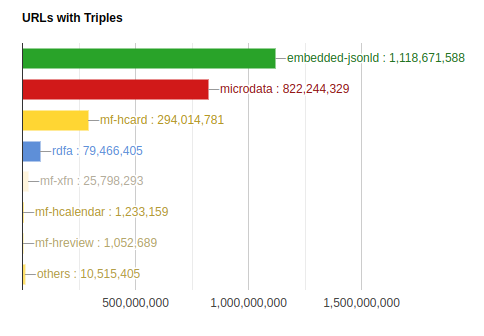

Beyond RSS
The idea of the Awakari service is to filter important events from unlimited number of various sources. This article is about the ways it uses to extract a structured data from the Internet beyond RSS feeds and Telegram channels.
The first and most obvious type of public data sources is RSS/Atom feed. Using the Awakari service you can get rid of visiting the feeds, channels and sites again and again. Instead, the service performs the reverse search and delivers relevant messages. Nevertheless, most of useful data in the Internet remains unavailable.
Online services have benefits from users getting the content only in their apps and platforms. This is also one of the reasons why RSS is loosing its popularity for the last 10-20 years. Moreover, many services blocking any attempts to automatically collect their data.
Structured Data
On the other hand, there's an opposite initiative:
Schema.org is an initiative launched on June 2, 2011, by Bing, Google and Yahoo![3][4][5] (operators of the world's largest search engines at that time)[6] to create and support a common set of schemas for structured data markup on web pages. In November 2011, Yandex (whose search engine is the largest in Russia) joined the initiative.[7][8]
The structured data is ubiquitous among the Internet and it's not unexpected. Services do want to publish it at least to stay as high as possible in Google's search results. Just have a look to the detailed statistics:
It's clearly visible there are 2 most popular options - JSON-LD and Microdata. Both are used to describe entities of a certain type with certain attributes.
Most popular types are:
In the example to the right there's a "Product" entity that has attributes. There's a nested "Offers" entity that has a "price" attribute. Awakari converts these attribute names to lowercase. The nested attribute names have the parent entity name as a prefix. For example, the price attribute will have the certain name "offersprice" in Awakari. This is conversion is necessary to be compatible with CloudEvents standard .
There are also some other semantic markup ways:
All above ways are now supported by Awakari. To bake unique events from such entities it's also necessary to:
Conclusion: it's possible to consume much more online sources as "update feeds".
How it works
So now Awakari